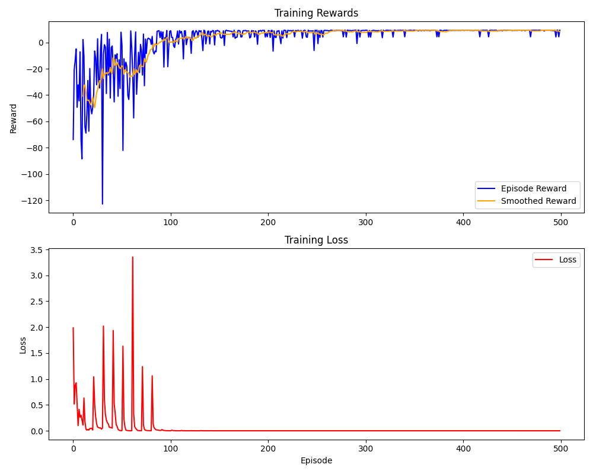
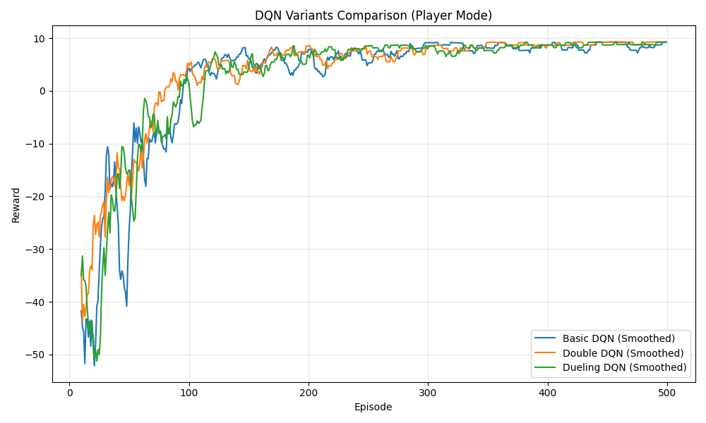
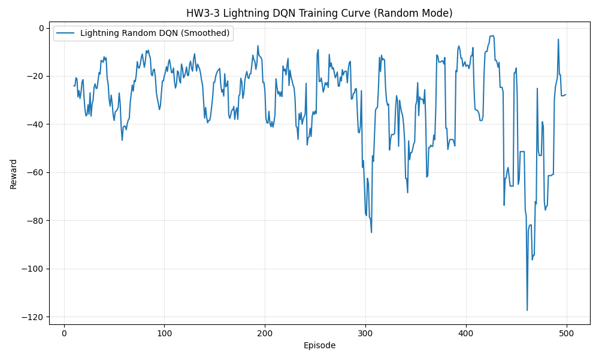
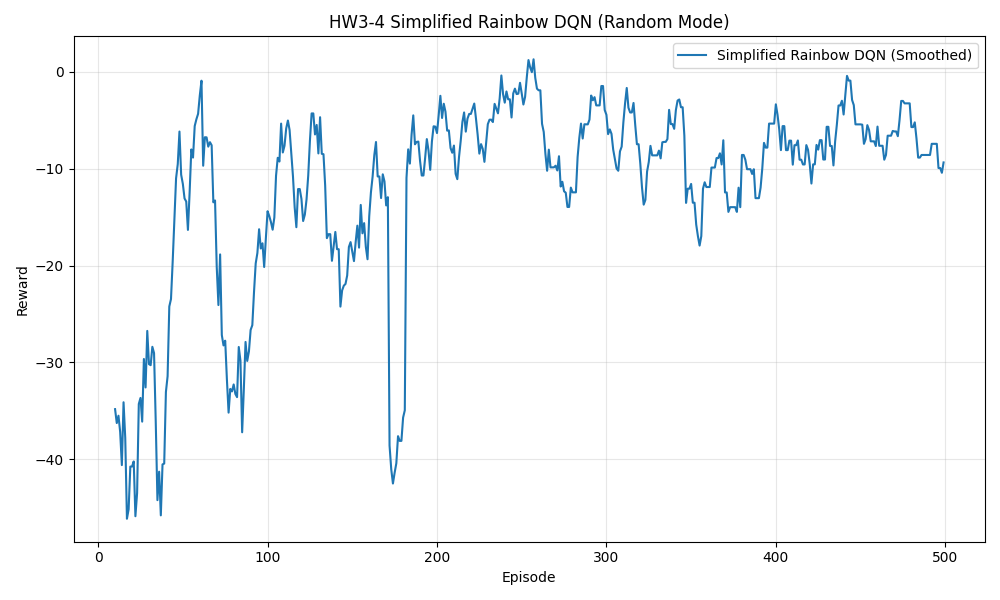

Homework Report & Implementation Details
This homework explores Deep Q-Networks (DQN) and several key enhancements that address its limitations. The code is implemented in Python (PyTorch and PyTorch Lightning) and is available in the code/ directory.
A high-level summary of the training curves generated across all four homework sections.

This curve shows the training reward of the basic DQN with experience replay in static mode.

This plot compares Basic DQN, Double DQN, and Dueling DQN under the same environment setting.

This curve shows the PyTorch Lightning DQN trained on random mode with stabilization techniques.

This curve shows the simplified Rainbow DQN bonus implementation using Double DQN, Dueling DQN, Prioritized Experience Replay, and n-step returns.
In this section, we implement a basic Deep Q-Network for a static GridWorld environment where the start and goal positions remain fixed across episodes.
See results/ directory for training plots. The agent successfully learns the optimal path to the goal, demonstrating the effectiveness of the Replay Buffer in stabilizing learning compared to a purely online update.
The Player Mode environment introduces more variability. To handle this, we upgrade our agent with two significant architectural improvements.
Standard DQN suffers from overestimation bias due to the max operator in the Bellman equation. Double DQN addresses this by decoupling action selection from action evaluation:
The Dueling architecture splits the network into two streams: one estimates the state value $V(s)$ and the other estimates the advantage $A(s,a)$ for each action.
This allows the network to learn which states are valuable without having to learn the effect of every action for every state, improving sample efficiency.
See results/hw3_2_comparison_curve.png for the training comparison plot. Both Double DQN and Dueling DQN show more stable convergence and higher average rewards in fewer episodes compared to the basic DQN.
In Random Mode, the start and goal positions change every episode, requiring the agent to generalize its learned policy. To support this harder task, we refactor the codebase to use PyTorch Lightning and introduce advanced training techniques.
The model was encapsulated into a LightningModule, cleanly separating the architecture, the training loop (via training_step), and the optimizers. We utilized an IterableDataset to bridge our Replay Buffer with PyTorch Lightning's standard DataLoader mechanism.
StepLR scheduler to incrementally decrease the learning rate, allowing the agent to fine-tune its policy as it nears convergence without overshooting.See results/hw3_3_lightning_random_curve.png for the random mode training plot. The agent is able to generalize finding the goal from varied starting positions, though it requires more episodes to converge than static mode.
Rainbow DQN combines several independent improvements to the DQN algorithm into a single, state-of-the-art agent. To solve the Random Mode GridWorld efficiently, we implemented a Simplified Rainbow DQN.
Note: Distributional RL and Noisy Nets were excluded from this simplified version to maintain beginner accessibility and ensure the agent can be quickly trained on a CPU.
See results/hw3_4_rainbow_bonus_curve.png for the bonus training plot. By leveraging PER and N-Step returns, the Simplified Rainbow agent is structurally much better equipped to handle the shifting goals of Random Mode and learns significantly faster than standard implementations.
Tabular Q-learning requires maintaining a table entry for every possible state-action pair. In environments with continuous or very large discrete state spaces, this becomes computationally infeasible (the curse of dimensionality) and suffers from poor sample efficiency since the agent cannot generalize knowledge across similar states.
It breaks the temporal correlation between consecutive experiences, providing i.i.d. (independent and identically distributed) samples for the neural network. It also allows the agent to learn from past experiences multiple times, greatly improving data efficiency.
It explicitly separates the estimation of state value and action advantage. In many states, the choice of action doesn't significantly affect the outcome. Dueling DQN can learn the value of these states directly without having to update the Q-values for every possible action.